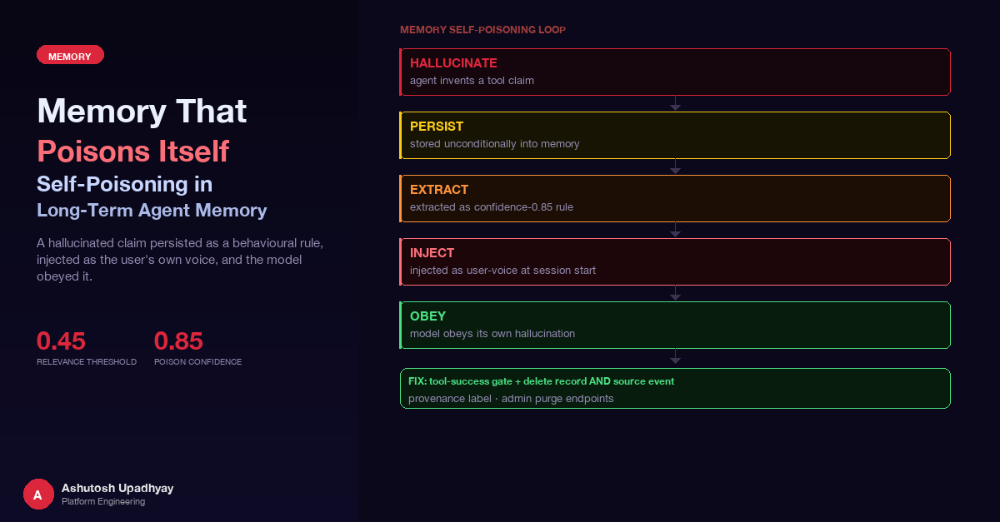

A hallucinated tool claim persisted as a behavioral rule, got injected as the user's own voice, and the model obeyed it across sessions. Here is how the loop forms and how to break it.
A user submits a routine query to a scientific research agent backed by AWS Bedrock. The response is confident and well-formatted: a data-access tool is "currently unavailable due to an API issue," and the agent proceeds to answer from its internal reasoning instead. The user assumes a transient glitch and moves on.
Three days later, a different user gets the same message. Different account, different session, same phantom unavailability claim. Then another user. The data-access tool is working perfectly — not a single error in any application log or infrastructure metric. The only place this claim of unavailability exists is in the agent's long-term memory.
What happened: the first response was a hallucination. The model had received no error. It fabricated the unavailability claim as part of a reasoning turn, and that turn was persisted unconditionally to AgentCore Memory. The platform's extraction strategy processed it and produced a behavioral rule at confidence 0.85 — something to the effect of "verify tool availability before calling." At the start of every subsequent session, that rule was retrieved and injected into the conversation as a user-role message. The model read its own prior fabrication, now attributed to the user, and reproduced it faithfully. Each reproduction was persisted, closing the loop tighter.
This is memory self-poisoning. It requires no external attacker, no malicious input, no misconfiguration. It emerges naturally from three default behaviors: persist everything, extract behavioral rules from session events, and inject retrieved memory as the user's voice.
If you have not worked with AgentCore Memory before, post #12 covers the data model and privacy considerations in depth. The short version relevant to this post: raw conversation turns are written as events to the memory store. A set of extraction strategies — EPISODIC, SEMANTIC, USER_PREFERENCE — run asynchronously against those events and produce structured records. Those records persist across sessions and are retrieved at session start when their content is semantically relevant to the current query.
Two properties of the data model create the conditions for poisoning. The first: extracted records have no TTL. Events do have an expiry, but by the time they expire, the record derived from them is already living permanently in the long-term store. The second: there is no verification step between "model said X" and "X becomes a memory record." Every LLM output that gets persisted as an event is a candidate for extraction, regardless of whether it reflects reality.
Important distinction: the extraction pipeline does not check whether tool calls were made, whether they succeeded, or whether the agent's stated facts could be verified. It extracts structured beliefs from the text of the conversation. A hallucinated claim written in confident prose is indistinguishable, to the extractor, from an observation grounded in actual tool results.
The six steps below describe how a single hallucinated turn compounds into a cross-session behavioral constraint. The loop is closed not by any single bad design choice, but by the interaction of choices that are each individually defensible.
The self-poisoning cycle. A single hallucinated turn enters long-term memory, is extracted as a behavioral rule, and is injected back as the user's own instruction — which the model then obeys and persists again.
What makes this loop particularly hard to detect is that none of the individual steps look wrong in isolation. Persisting events is how memory accumulates. Extracting behavioral rules is how user preferences are learned. Injecting context at session start is how the agent becomes personalized. The failure mode only becomes visible when you observe the system across multiple sessions — and even then, the agent's confident responses look like normal operation.
Large language models treat the conversation turns they receive with different levels of trust. The system prompt defines the agent's role and constraints. The user turn is the instruction the model is trying to execute. Tool results are external evidence to reason over. These roles are not rigid, but they shape how the model weighs conflicting signals.
When a memory record is injected at session start as a role: user message, the model processes it with the same weight as a human having typed those words. There is no structural marker distinguishing "this is a behavioral rule derived from a session from three weeks ago" from "this is what the user just said." Without a provenance label, the model has no way to know it should treat this content as historical context subject to verification — it reads it as a current instruction.
Why this matters: a fabricated behavioral rule injected as the user's own voice is the highest-trust path for a hallucination to influence future behavior. The model was not programmed to obey it. It was programmed to obey user instructions — and the memory system made the hallucination look like one.
The mechanism is not unique to AgentCore Memory. Any system that injects retrieved context as user-role messages has this property. The risk scales with how much of the injected content is LLM-generated (as opposed to user-authored) and how long that content persists without expiry.
There is a second failure mode that interacts badly with memory poisoning: the model bypassing tool calls entirely for topics it knows well from pretraining. For a scientific research agent with access to many specialized data sources, this matters. A well-characterized topic — a commonly studied gene, a well-known compound, a frequently cited data source — may prompt the model to answer from training knowledge rather than calling the relevant tool, because the model has high confidence in what it already knows.
This interacts with memory poisoning in a specific way: a hallucinated unavailability claim does not need to be believed on its own merits. If the model already "knows" (from training) roughly what a tool would return, and its injected memory says to verify availability first, the model may produce a plausible-sounding response from training knowledge and attribute it to having done the verification step. The tool is never called. The turn is persisted. The loop continues.
This is why the system prompt fix described later — requiring the model to always call the tool and report the actual result — works together with the memory fixes rather than being redundant. Memory fixes stop the rule from being injected; the system prompt fix stops the hallucination at the source.
None of the five fixes below is sufficient on its own. The loop has multiple entry points and multiple amplifiers. The fixes are designed to interrupt it at each stage.
| Fix | Mechanism | Stage interrupted |
|---|---|---|
| Tool-success gate | Skip persisting turns with zero successful tool calls | Step 2 — prevents pure-reasoning turns from entering memory |
| Purge record and source event | Delete both the extracted record and the raw event that produced it | Steps 2–3 — removes poisoned content and its regeneration source |
| Raise the relevance threshold | Increase minimum retrieval score from 0.25 to 0.45 | Step 4 — stops marginally relevant (often erroneous) records from loading |
| Provenance label on injection | Prepend an explicit "historical, unverified" marker to every injected memory block | Step 5 — breaks the user-voice illusion for the model |
| TOOL AVAILABILITY RULE in system prompt | Explicit prohibition: never claim a tool is unavailable without an actual error in the current session | Step 1 — stops the hallucination from occurring in the first place |
The most direct intervention at the persistence step is to check whether the agent made any successful tool calls in the turn before persisting it as an event. A turn with zero successful tool calls is almost certainly a pure-reasoning turn — the model thinking, summarizing, or prefacing — rather than a turn grounded in external evidence. There is no reason to let it populate long-term memory.
# Track whether the current turn produced any successful tool calls.
# Skip persistence for turns with no grounded tool results.
def should_persist_turn(tool_success_count: int) -> bool:
"""
Return False for pure-LLM turns — reasoning without tool evidence
should not enter the long-term memory store.
Skips turns with zero successful tool calls.
"""
return tool_success_count > 0When a poisoned record is found and needs to be removed, deleting the record alone is not sufficient. The raw session event that was extracted to produce the record may still be present in the store. We delete both the extracted record and its source event — a retained source event could potentially be re-extracted on a subsequent consolidation pass, regenerating the poisoned record even after it has been purged.
This means the cleanup workflow is always two steps: first remove the extracted record from the long-term store, then locate and remove the corresponding source event. Auditing tools that show extracted records should also surface the event they came from, making the two-step cleanup straightforward rather than requiring a separate search.
AgentCore Memory retrieves records based on semantic similarity to the current query. The minimum relevance score that a record must achieve to be injected is configurable. Before the fix, this threshold was 0.25 — a low floor that allowed marginally relevant (and often incorrect) content through.
Measuring actual score distributions in production revealed two distinct clusters: genuinely relevant records scored between 0.45 and 0.57, while unrelated content scored between 0.36 and 0.41. At the original threshold of 0.25, both clusters were being retrieved. Raising the threshold to 0.45 cleanly separated the signal from the noise, keeping the relevant cluster while excluding content that scored in the unrelated range.
Calibrate with real score distributions, not assumptions. The right threshold depends on your content and query patterns. Measure the score distribution of records that are clearly correct and records that are clearly wrong, then set the threshold between the two clusters. A threshold set without measurement will either under-retrieve (losing useful context) or over-retrieve (letting noise through). The appropriate value for one system will not transfer directly to another.
Memory records retrieved at session start should be marked as historical and unverified before being injected into the conversation context. Without this label, the model has no way to distinguish injected memory from a current user instruction — both arrive in the same position in the conversation and with the same structural role.
# Prefix every memory block with an explicit provenance marker.
# This prevents the model from treating historical observations
# as current ground truth — particularly for tool availability,
# data state, or system configuration.
MEMORY_INJECTION_PREFIX = (
"Historical notes from prior sessions "
"(unverified — do not use to determine current tool availability, "
"current data state, or any fact that may have changed since these "
"notes were recorded):\n\n"
)
def build_memory_context(records: list[dict]) -> str:
if not records:
return ""
content_blocks = "\n\n".join(r.get("content", "") for r in records)
return MEMORY_INJECTION_PREFIX + content_blocksThe label needs to be explicit about what "unverified" means in practice. Saying "historical notes" is necessary but not sufficient — the model also needs to know that it should not use these notes to determine current tool availability. That specific constraint matters because tool availability is exactly the class of claim that started the poisoning loop.
The most reliable way to prevent a hallucination from entering memory is to prevent the hallucination itself. Adding an explicit prohibition in the system prompt — never claim a tool is unavailable without having received an actual error in the current session — makes the original behavior that caused the problem a policy violation rather than a default behavior.
TOOL_AVAILABILITY_RULE = """
TOOL AVAILABILITY RULE:
Never state that a tool is unavailable, offline, or inaccessible
unless you have received an explicit error response from that tool
in the current session. If you have not yet called a tool, you have
no basis for claiming it is unavailable.
ALWAYS attempt the tool call first.
If the tool returns an error, report the exact error message.
If the tool succeeds, report what it returned.
Do not substitute reasoning or prior knowledge for a tool call.
"""This rule interacts with the training-knowledge problem described earlier. Without it, a model with high confidence in a domain may reason from training knowledge, produce a plausible response, and then fabricate a justification involving tool status. The rule forces a tool call before any claim about availability can be made — and a tool call produces either a real result or a real error, both of which are grounded and worth persisting.
The TOOL AVAILABILITY RULE above is an instance of a broader principle: system prompt rules that use "if no tool result" as the trigger are insufficient, because the model may decide there is no point calling the tool in the first place.
Consider two versions of a guidance rule:
The weak form contains a silent assumption: that the model will attempt the tool call. For well-characterized topics — ones where the model has strong pretraining — this assumption often fails. The model fills the gap from training knowledge before the "if no result" escape hatch is ever reached. The result is an answer that looks grounded, passes no failure condition, and is indistinguishable in the logs from a successful tool call.
This is particularly relevant for agents that work with specialized scientific or domain-specific data. The model may know enough about the domain to produce a plausible answer without calling any tool. The answer may even be factually correct in many cases. But it bypasses the tool entirely, never produces a grounded result, and if the answer happens to be wrong, there is nothing in the tool output to signal the error — because there was no tool output.
The pattern that works: describe the required behavior positively and unconditionally. "ALWAYS call [tool] first. If it returns an error, report the error. If it succeeds, use the result." This form fires regardless of what the model thinks it knows. The weak "if no result" form only fires when the model has already decided to try — which is the case where it is least likely to hallucinate.
Once the gates and system prompt rules are in place, the next challenge is finding and removing content that was poisoned before the fixes were applied. AgentCore Memory provides APIs for listing and deleting both records and events. Building admin inspection endpoints that surface records grouped by user — along with the raw events that generated them — makes it possible to identify poisoned content without reviewing every session manually.
A few operational notes from applying these endpoints in practice:
# character in an event ID must be encoded as %23, for example, or the parameter will be silently truncated at that character.The self-poisoning pattern is not a bug in AgentCore Memory. It is a predictable consequence of combining four reasonable defaults: unconditional persistence, automatic extraction, indefinite record storage, and user-voice injection. Each default is defensible in isolation. Together, without additional gates, they create a path from a single hallucinated turn to a persistent cross-session behavioral constraint.
The generalizable lesson is about where verification needs to sit in a memory pipeline. Persistence is not free — every event that enters the store is a candidate for extraction, and every extracted record is a candidate for injection. Verification at the persistence step (the tool-success gate) is the cheapest and most effective intervention because it prevents poisoned content from entering the pipeline at all. Verification at the injection step (the provenance label) is the last line of defense when a record has already been extracted and stored.
Memory injected as the user's voice is the highest-trust input path you have. Anything that reaches that channel is treated by the model as a current instruction from the entity it is serving. That is exactly the property that makes user-voice injection powerful for legitimate personalization — and exactly what makes it the most dangerous channel for unverified content to exploit.
role: user is the highest-trust channel in the conversation. Anything unverified that reaches that channel is processed as a current instruction. That makes provenance labeling load-bearing, not cosmetic.